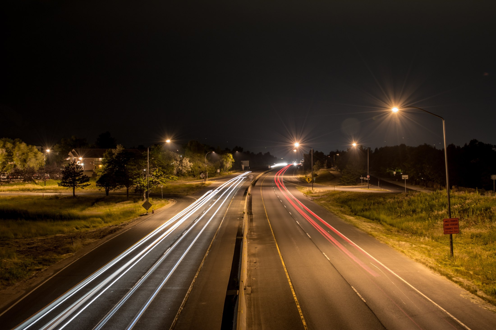
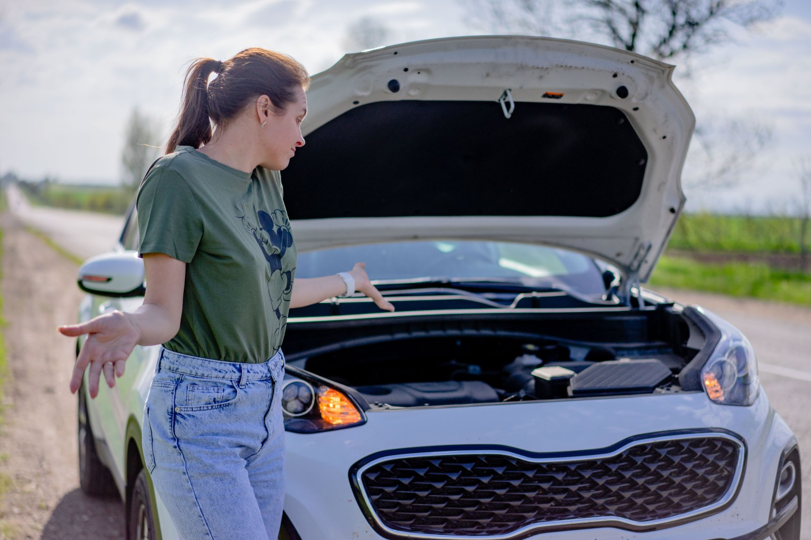
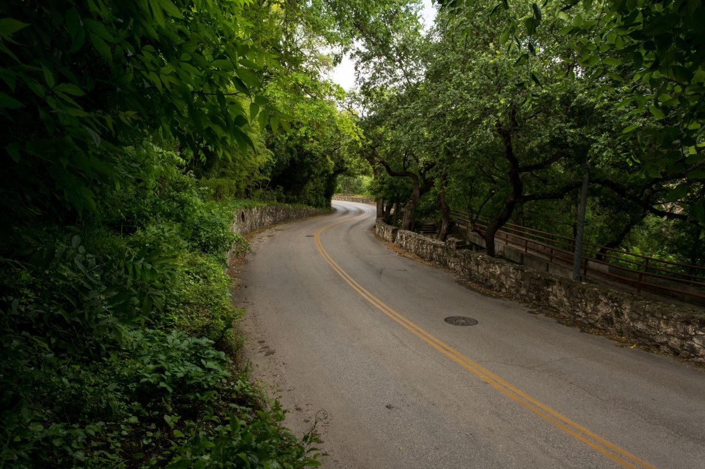
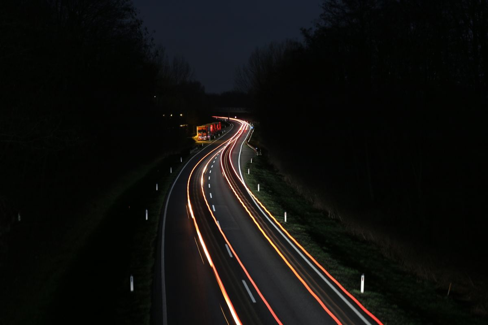
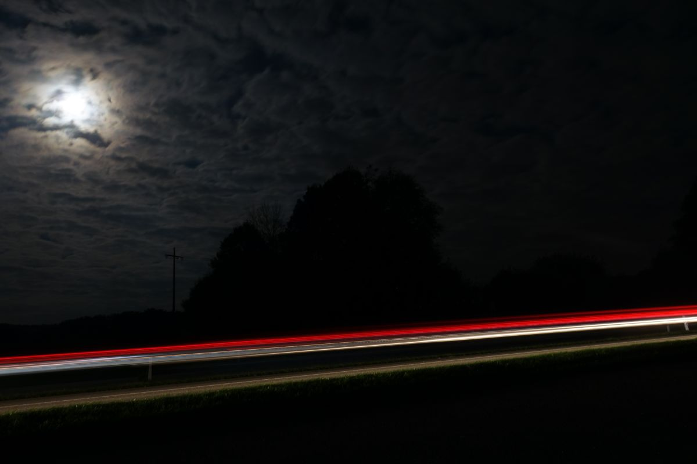
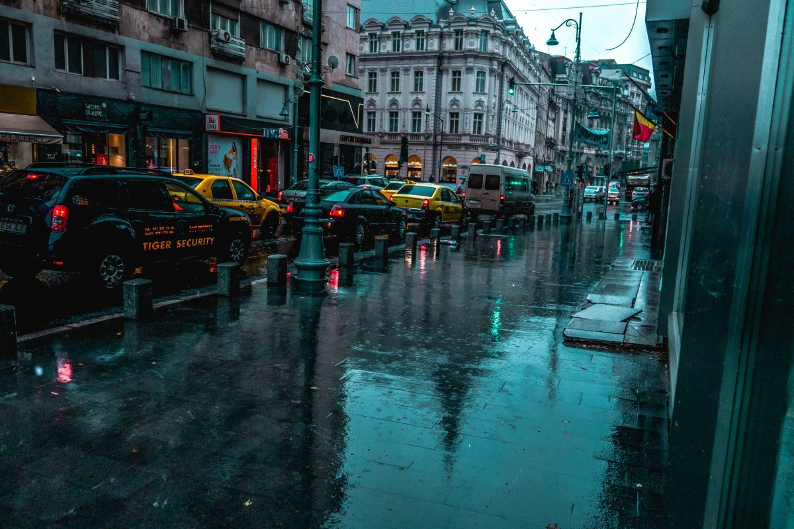
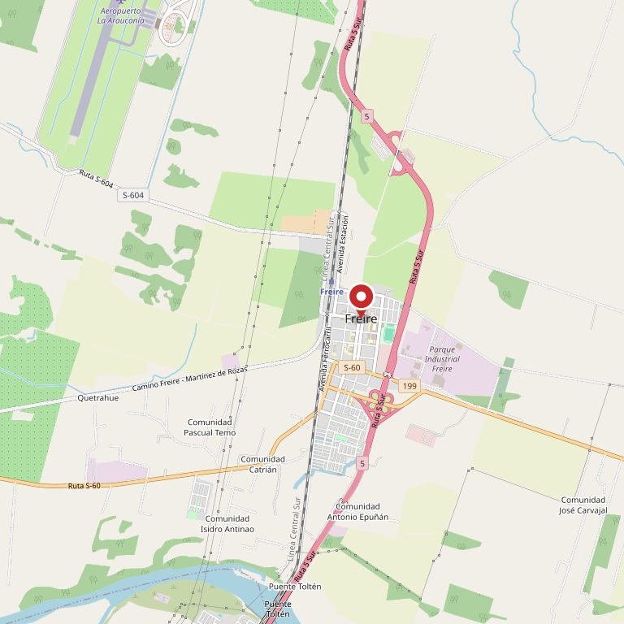

01
Traslado por pana
El auto no arranca o no puede seguir. Se carga y se lleva al taller que usted diga.
Freire · Ruta 5 Sur · Región de La Araucanía
Servicio de grúa las 24 horas. Si el auto no anda, no importa la hora ni el día.
Llame ahora +56 9 9837 9505
01 — Lo que nadie le explica
Entre que usted llama y que la grúa aparece hay un rato. Ese rato es el más peligroso, sobre todo en la Ruta 5. Esto es lo que conviene hacer, en orden.
Minuto 0
Si el auto todavía rueda, llévelo a la berma lo más lejos posible del pavimento. Un auto detenido en la pista es el riesgo mayor de todos, más que la pana misma.
Minuto 1
Encienda las intermitentes apenas se detenga, incluso antes de bajarse. Es lo único que avisa al que viene atrás a 120.
Minuto 2
Nunca por el lado del tránsito. Si va con más gente, que todos salgan por ese lado y se ubiquen detrás de la barrera de contención, no al lado del auto.
Minuto 3
Póngase el chaleco reflectante antes de caminar por la berma, y recién ahí instale el triángulo detrás del vehículo, caminando por fuera de la calzada.
Minuto 4
Este es el dato que más acelera la llegada. En la Ruta 5 hay un poste blanco con el kilómetro cada mil metros. Ese número y el sentido en que viajaba —hacia Temuco o hacia Loncoche— valen más que cualquier descripción del paisaje.
Si no ve ninguno, sirve el último cruce, puente o pueblo que pasó.
Minuto 5
Kilómetro y sentido, marca y modelo, si las ruedas giran o están trabadas, y si el auto está en berma o en la pista. Con eso sale la grúa que corresponde y no una que no sirve.
Después
Salvo que llueva fuerte o haya peligro afuera. Dentro de un auto detenido en la ruta se está más expuesto que detrás de la barrera.
Esto es orientación general de seguridad en carretera, escrita para que sirva mientras espera. No reemplaza a Carabineros ni a la concesionaria de la ruta: si hay heridos, lesionados o el vehículo obstruye la pista, lo primero es el 133.
Nadie planea llamar
a una grúa.
02 — Qué hacemos
01
El auto no arranca o no puede seguir. Se carga y se lleva al taller que usted diga.
02
Vehículo en la berma blanda, en la cuneta o atascado en barro. Común en los caminos rurales de la zona después de lluvia.
03
Después de un accidente, con el vehículo ya autorizado a moverse.
04
Un vehículo que no está inscrito, que se compró en otra ciudad o que lleva tiempo detenido.
Los tipos de vehículo que se pueden cargar y las tarifas por kilómetro los define Grúas Alan: hoy no están publicados en ninguna parte y son lo primero que habría que agregar a esta página.

A las tres de la mañana también
Las 24 horas quiere decir las 24 horas.

03 — Dónde llegamos
La base está en Freire, sobre el eje de la Ruta 5, entre Temuco y Loncoche. Desde ahí se sale hacia los dos lados y hacia los caminos interiores.
El radio exacto de cobertura y hasta dónde llegan sin recargo lo define el dueño. Esta lista sale de la ubicación de la base, no de un dato publicado.
04 — La ruta




05 — Contacto
Si hay heridos o el vehículo obstruye la pista, primero el 133. La grúa va después.

Para el dueño de Grúas Alan
Su cliente no lo busca a usted: busca «grúa Freire» o «grúa ruta 5» con una mano, apurado y a veces de noche. Google muestra primero a quien tiene una página que responda esa búsqueda. Un enlace de WhatsApp no aparece en esos resultados, y además obliga al que llega a abrir otra aplicación antes de poder llamar.
Con 5,0 en dieciséis reseñas el problema no es el servicio. Es que la mitad de la gente que lo necesita esta semana no va a saber que usted existe.